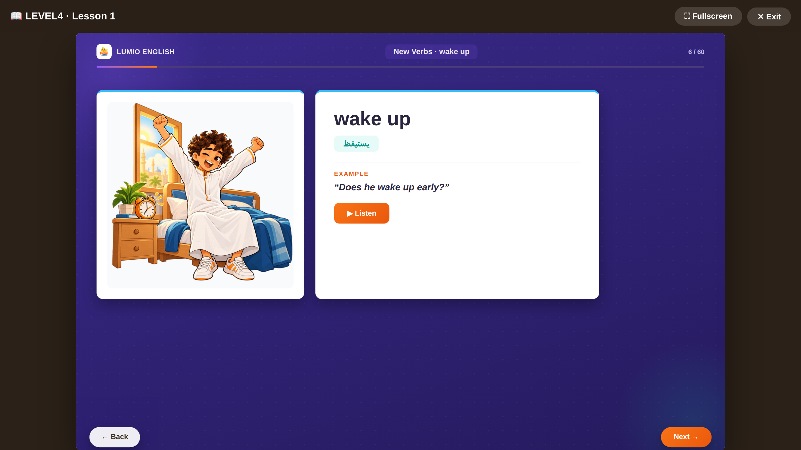

Everyday decision-making in English: routines, money, requests, and advice -- the language your child needs to navigate real choices, not just describe the world around them.
By the end of this level, your child can:
- Describe routines with frequency words (always, never, how often)
- Talk about sequence (before and after)
- Ask politely and talk about possessions
- Ask about prices and talk about saving money
- Make polite requests ("I'd like...")
- Give and receive advice ("you should")
- Talk about future plans and the wider world
Sample vocabulary
routineروتينsnackوجبة خفيفةadviceنصيحة
Grammar
Frequency adverbs, possessives, requests with "I'd like", modals like "should" -- one grammar point per lesson with its own Grammar Hub rule page, building toward real decision-making conversation.

A real vocabulary slide from Lesson 1 — picture, Arabic, example sentence and audio